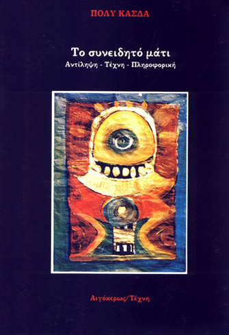

2/3
[Essay]
The Conscious Eye
Poly Kasda, Aigokeros Publ. (1988)
.
....................
 ........
........
........ ........ 1st book publication
- Cognition - Art - Informatics
- Shift on Perspective: 'From seeing the world, seeing myself seeing the world'
- Art theory combined with concepts from computer science and cognitive psychology
Selected Concepts:
* Renaissance through a computational theory of vision
* Computer as a Dadaist tool
* Minimalism, Op art and the principles of the Gestalt school of psychology
* Computer as an educational tool